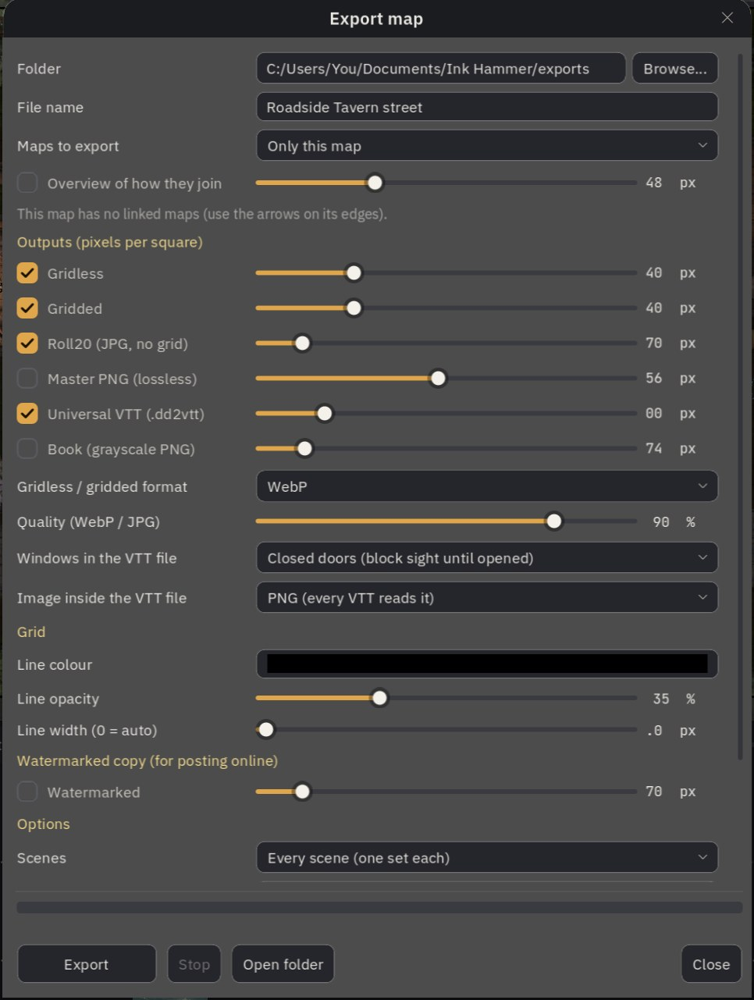

Exporting for play
File > Export (Ctrl+E) writes everything a table needs in one run: pictures for print or screen, and a file a virtual tabletop can read with the walls, doors and lights.
The outputs
| Output | Use it for |
|---|---|
| Gridless | Virtual tabletops that draw their own grid. |
| Gridded | Printing, or tabletops without a grid. |
| Roll20 | A JPG at Roll20's 70 px per square, no grid. |
| Master PNG | A lossless copy to keep or edit elsewhere. |
| Universal VTT | A .dd2vtt file: the picture plus walls, doors, windows and lights. |
| Book (grayscale PNG) | A black and white picture for a printed book, with the look set in Book view (top bar): brightness, contrast and midtones. 74 px per square by default. |
Each output has its own size in pixels per square. Higher is sharper and bigger on disk.

Before you export: Check map
Tools > Check map lists mistakes that are easy to miss: missing art, props off the map edge or hidden under a building's floor, two copies of a prop on top of each other, props drawn far bigger or smaller than usual, glows that blow out to white, lamps right beside a tall prop (they throw a hard wedge of shadow), lamps off the map and empty layers. Its lighting pass flags lamps with shadows off, lamps above a roof or inside a prop, and furniture that casts no shadow; it also lists art with no size in its pack. Click a line to select the thing and go there. It changes nothing; fix what matters and click Check again.
Into a virtual tabletop
The .dd2vtt file is the Universal VTT format. It loads in:
- Foundry VTT with the Universal Battlemap Importer module.
- Owlbear Rodeo, Arkenforge, Fantasy Grounds and most tools that take Dungeondraft exports.
Before exporting, turn on Walls view (top bar) to check what the tabletop will get: walls, doors, windows and openings in colour. The export also writes a short report of problems it found (gaps in walls, doors off a wall).
- Windows in the VTT file: as closed doors (block sight until opened) or as gaps.
- Image inside the VTT file: PNG works everywhere; WebP is much smaller if your tabletop takes it.
- Invisible walls (Walls tool) block sight and movement in the tabletop but never show in the picture. Cave edges: Tools > Specialized > Generate VTT walls from void.
Other settings
- Maps to export: only this map, or this map with its levels above and below and the maps beside it. Overview of how they join adds one picture of them all laid out together.
- Scenes: every scene (one set each) or only the current one.
- Shadow and water detail: High and Max render sharper shadows and water for the export.
- Labels: a DM copy with labels, a clean player copy, or both in their own folders.
- Grid: line colour, opacity and width for the gridded copy.
- Watermarked copy: a smaller copy with your logo or text for posting online.
The speed switches only change the editor. Sun shadows, lamp shadows and animation all go into the export, at the detail you pick.
Package a map
File > Package map with its assets writes a folder with the map and every piece of art it uses. Open the .anvilmap inside it on any computer and its art joins the library on its own.